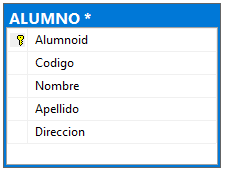
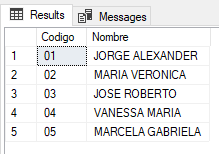
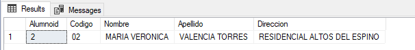
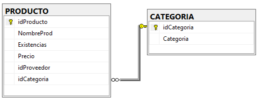
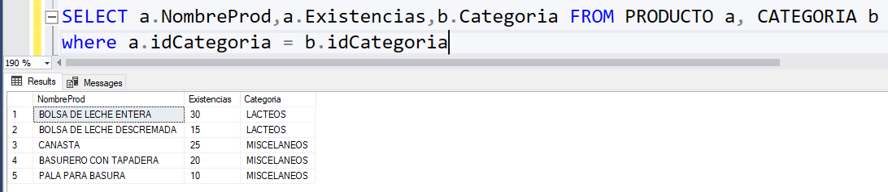

Lenguaje e interfaz de una BD, Lenguaje formal de consultas SQL y Comandos SQL
3. Lenguaje Formal de Consultas: Comando SELECT
Contenido
La sentencia SELECT sirve para recuperar información en SQL, es decir, permite obtener registros de la base de datos, de una o varias tablas combinadas. Además, permite hacer filtrados de la información, para obtener únicamente los registros que cumplen ciertas condiciones.
Su sintaxis, más simplificada, es la siguiente:
SELECT * FROM tablaEsta sentencia SQL nos permite recuperar todos los campos (columnas) de una tabla en concreto. El asterisco "*" indica que se quieren recuperar todos los campos y "tabla" es el nombre de la tabla que se desea acceder.
Ejemplo si se cuenta con la tabla siguiente:

La consulta seria:
SELECT * FROM ALUMNOEl resultado de la consulta es:

Se puede indicar que recupere solo algunos campos en concreto, indicando cuáles son, separados por comas. Por ejemplo, podemos indicar que se desean recuperar solamente las columnas "nombre" y "email" de la tabla de usuarios, de esta manera:
select Codigo, Nombre from ALUMNOResultado:

Además, podemos usar condiciones en la búsqueda con la cláusula WHERE, indicando qué tipo de registros se desea obtener como respuesta.
select * from ALUMNO where Nombre = 'MARIA VERONICA'Resultado:

Esa sentencia recupera solamente aquellos registros de la tabla usuarios donde la columna "Nombre" sea igual a "MARIA VERONICA".
Con el comando SELECT puede obtenerse:
- Consulta de una o varias tablas.
- Consultarse filtrando registros o columnas.
- Agrupar registros.
- Unir campos como si fuese uno mismo.
- Unir diversos comandos SELECT.
Además, el comando SELECT puede usarse para consultas donde los campos mostrados pertenecen a tablas diferentes. Ejemplo: si se cuenta con la siguiente estructura de tablas:

Se desea crear una consulta que muestre el nombre de los productos, las existencias y su respectiva categoría.

Obra publicada con Licencia Creative Commons Reconocimiento Compartir igual 4.0